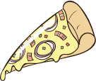
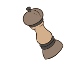
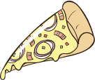
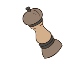

10 Superfoods to Boost Your Immune System
Discover the top ten superfoods that can help strengthen your immune system and keep you healthy year-round.
 



Discover detailed nutritional information, create customized meal plans, and connect with qualified healthcare professionals—all in one convenient platform.
Achieve Your Health Goals in Three Simple Steps
Easily search for detailed nutritional information on thousands of food items. Get insights on macronutrients, micronutrients, and health benefits to make informed dietary choices.
Connect with registered dietitians, general practitioners, fitness coaches, and psychologists. Schedule video consultations at your convenience and get personalized health advice.
Receive customized meal plans tailored to your dietary needs and health goals. Collaborate with healthcare professionals to create plans that work best for you, ensuring you stay on track.
Stay Informed with the Latest in Nutrition and Health
Discover the top ten superfoods that can help strengthen your immune system and keep you healthy year-round.
Explore how a plant-based diet can improve your overall health, reduce the risk of chronic diseases, and help the environment.
Learn the basics of meal prepping and how it can save you time, money, and help you stick to a healthy eating plan.
Master the skill of reading nutrition labels to make informed choices about the foods you eat.
Connect with Leading Experts for Personalized Health Advice
Real Stories from Satisfied Patients and Clients
Join Aemao Klinic Today


Dr. Sarah Lee helped me understand the importance of nutrition in mental health. Her compassionate approach and expertise made a real difference in my life. The telemedicine feature is a game-changer.
Sarah Thompson
Freelance Designer
I had an amazing experience with Dr. Jane Smith! Her personalized meal plan has completely transformed my eating habits. I've never felt healthier and more energized. Highly recommend!
Michael Johnson
Software Developer
Dr. Emily Johnson is a fantastic fitness coach! Her tailored workout plans are both effective and enjoyable. I've seen significant improvements in my fitness level and overall health.
David Lee
Online Entrepreneur
Dr. Sarah Lee helped me understand the importance of nutrition in mental health. Her compassionate approach and expertise made a real difference in my life. The telemedicine feature is a game-changer.
Sarah Thompson
Freelance Designer
I had an amazing experience with Dr. Jane Smith! Her personalized meal plan has completely transformed my eating habits. I've never felt healthier and more energized. Highly recommend!
Michael Johnson
Software Developer